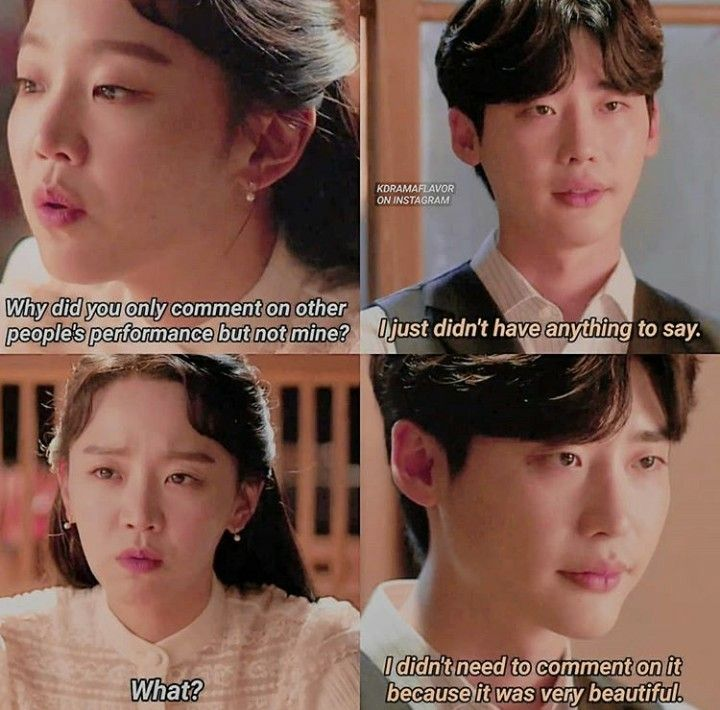

It is a 2018 South Korean television series based on true events, starring Lee Jong-suk and Shin Hye-sun. It aired on SBS from November 27 to December 4, 2018, and is available on Netflix worldwide throughout December.
Scene Photo
Movie Info
The series depicts the tragic romance between Joseon's first soprano Yun Sim-deok and the genius playwright, Kim U-jin.
- Genre:Historical , Romance , Melodrama
- Director:Park Soo-jin
- Writer:Jo Soo-jin
- Original Release: November 27 – December 4, 2018
- No. of Episodes: 6 Episodes
Cast
Lee JongSuk as Kim WooJinA genius playwright, a scholar that loves English literature. His father is a poor village man.
Shin HyeSun as Yun SimDeokKorea’s first soprano and writer of the song ‘Hymn of Death’.
Lee JiHoon as Hang NamPaA close friend of Kim WooJin and Yun SimDeok. He is in love with SimDeok but he realized that WooJin has feelings for her so he tries to stop his feelings. Knowing that their relationship is painful, he advised her to stop her feelings.
Production
- Executive producer(s):
- Jang Jin-wook
Early working titles of the series are Doctor Room (Korean: 닥터룸) and Pain Doctor Cha Yo-han (Korean: 통증의사 차요한). The first script reading took place in March 2019 at SBS Ilsan Production Center in Tanhyun, South Korea.